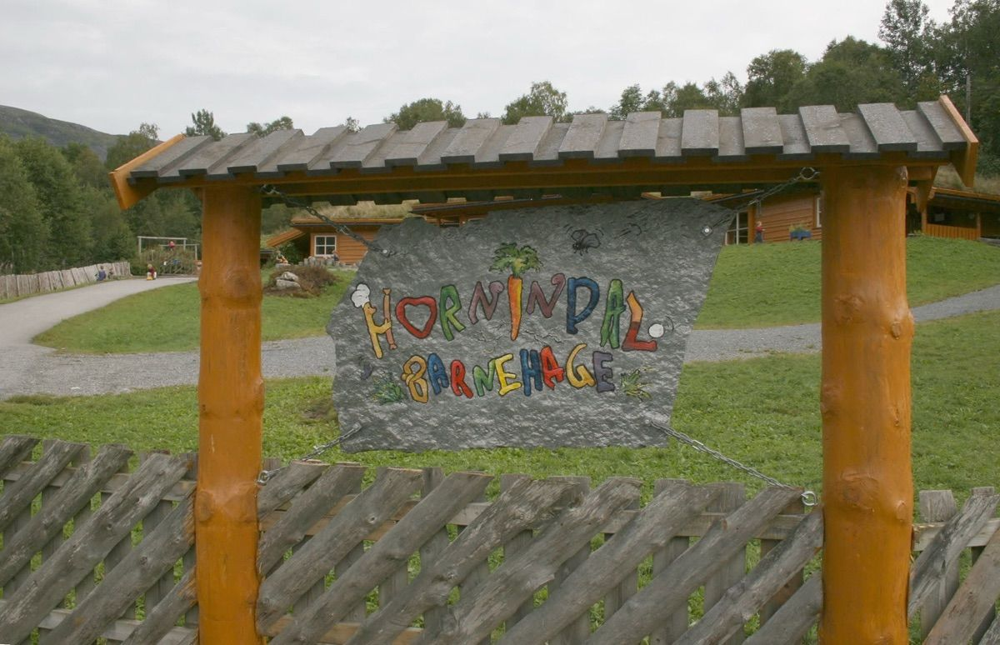
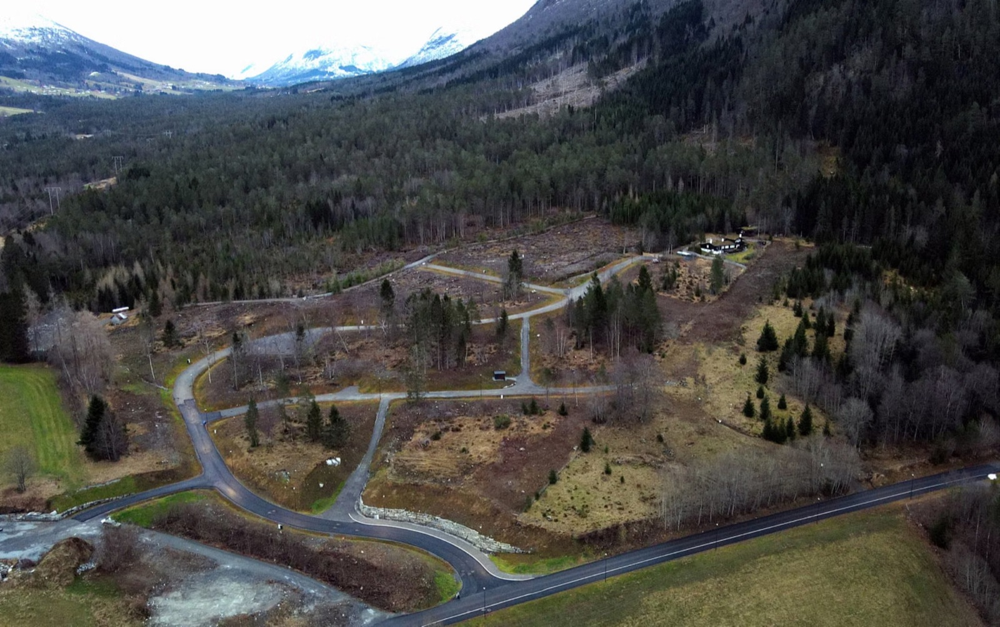
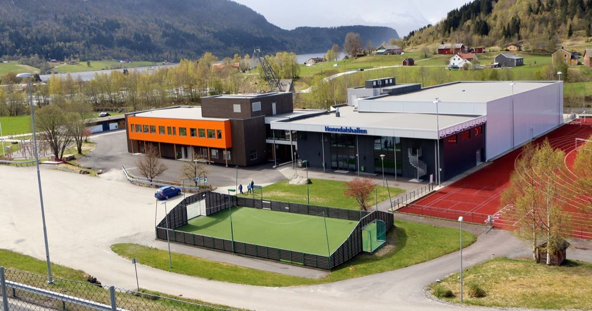
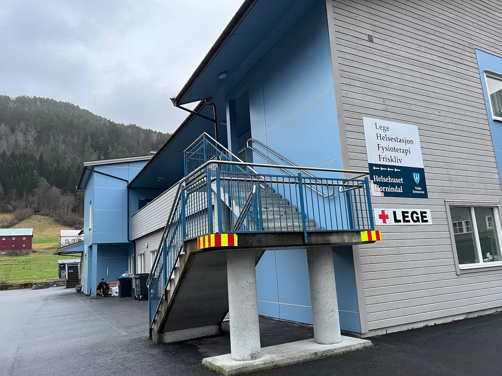
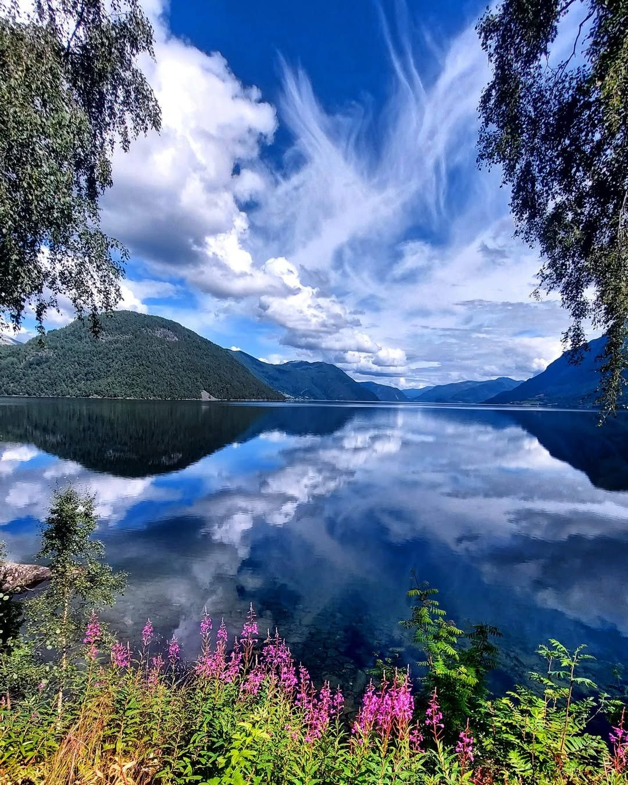
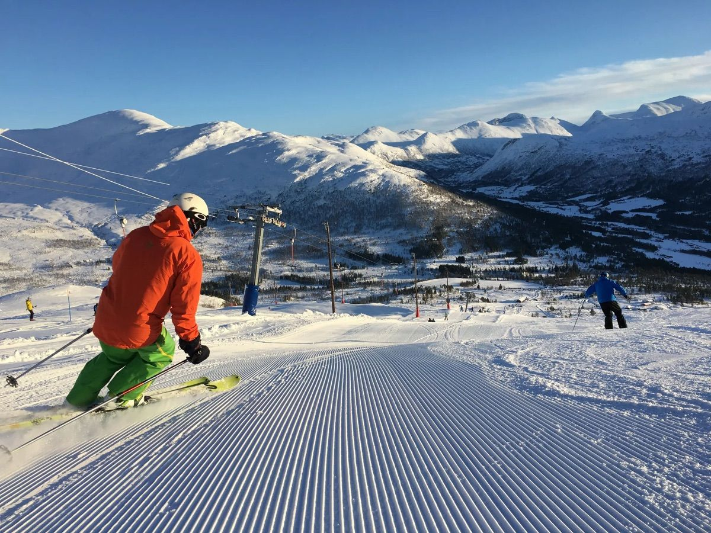
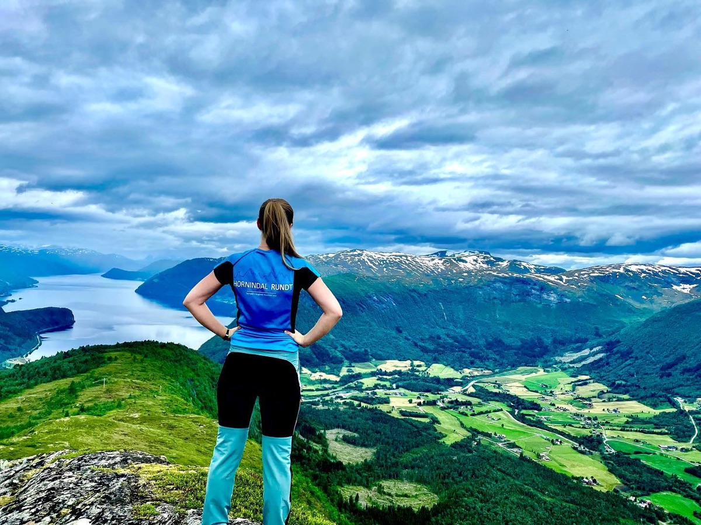
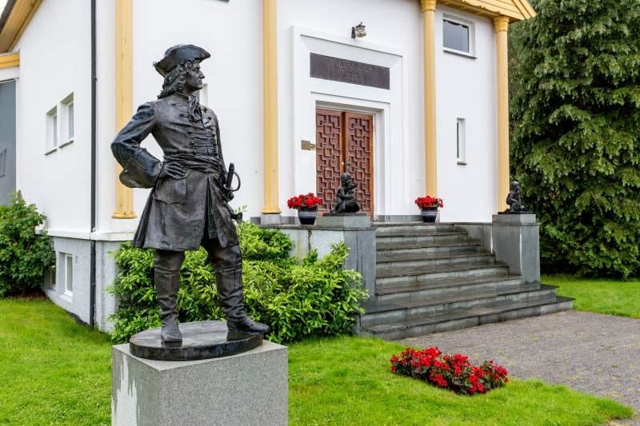

Barnehage
To barnehagar i bygda: kommunale Hornindal barnehage (avdelingane Trostereiret, Sjøormen og Bjørnehiet) og private Tunåsen barnehage, begge med små og trygge forhold. Austefjord barnehage ligg like over Kvivstunnelen.
Flytt til Hornindal
Europas djupaste vatn, tomter med utsikt, full grunnskule i bygda og høgskulebyen Volda 28 minutt unna. Her er det enklare å leve godt enn du kanskje trur.
Hjartet i Nordfjord
Grodås ligg i botnen av Honndalen, ved austenden av Hornindalsvatnet, der fylkesveg 60 møter E39. Rundt 510 menneske bur i sjølve bygdesenteret, og til saman om lag 1 150 i heile dalen.
Honndølene er nordfjordingar med rak rygg: kulturelt og historisk høyrer bygda til Nordfjord. Sidan 2020 er Hornindal ein del av Volda kommune, så skule, barnehage og kommunale tenester går gjennom Volda. Du får det beste frå begge sider: nordfjordsjela og ein høgskuleby tvers over fjellet.
Det meste er gangavstand på Grodås: skule, barnehage, helsehus, idrettspark, treningssenter, butikk og ein badestrand rett ved sentrum.
Bustad og tomt
Vil du byggje sjølv, sel Volda kommune tomter på Løvland, rett ved Grodås. Feltet er vest- og sørvestvendt med fin utsikt over Hornindalsvatnet, ligg nær skule og barnehage, har gangveg til sentrum og grensar til bustadfeltet Kirkhornbakkane. Kommunen tilbyr òg startlån gjennom Husbanken.

Vil du heller ha leilegheit enn å byggje sjølv? Hornindal Eigedomsutvikling AS planlegg Grodåstunet på Ospesletta, midt i Grodås sentrum: 24 lettstelte leilegheiter i seks firemannsbustader rundt eit felles tun, med kort veg til butikk, tenester og buss.
Formannskapet i Volda sa ja til planarbeidet i juni 2026, og reguleringsplanen er under arbeid. I oktober 2026 var seks til sju av leilegheitene alt reserverte. Er du interessert, ta kontakt, så set vi deg i kontakt med utbyggjaren.
Oppvekst

To barnehagar i bygda: kommunale Hornindal barnehage (avdelingane Trostereiret, Sjøormen og Bjørnehiet) og private Tunåsen barnehage, begge med små og trygge forhold. Austefjord barnehage ligg like over Kvivstunnelen.

Hornindal skule er ein full 1.–10.-skule med eige ungdomssteg. Ungane går heile grunnskulen i bygda og slepp å pendle før vidaregåande, eit reelt fortrinn for ein barnefamilie.

Helsehuset Hornindal på Grodås samlar lege, helsestasjon, fysioterapi og friskliv under eitt tak, uvanleg komplett for ei bygd på denne storleiken. Volda sjukehus er om lag ein halvtime unna.
Jobb
Det vanlegaste som gjer at ei flytting strandar, er jobb nummer to. Men arbeidsmarknaden er større enn bygda. Frå Grodås er du i Volda på 28 minutt og i Ørsta på om lag 40, med Høgskulen i Volda, Volda sjukehus og næringslivet i begge byane innan rekkjevidd. Til Stryn er det om lag 20 minutt, og til Nordfjordeid om lag 30.
Lokalt er industri- og handverkstradisjonen sterk: Ekornes har møbelfabrikk på Grodås, GRS Riflestocks eksporterer riflekolbar til over 40 land, og Øen Kuldeteknikk byggjer kulde- og varmepumpeanlegg.
Fritid og fellesskap

Om sommaren blir Hornindalsvatnet symjehallen i bygda: klart, kjøleg og djupt. Badestranda og strandpromenaden ved Grodås er storstova, og Hornindalsvatnet Maraton har gått ved vatnet sidan 1992, med distansar heilt ned til minimaraton.

Hornindal Skisenter ligg åtte minutt frå sentrum, med eitt av Noregs lengste skitrekk (nær 1 500 meter), terrengpark, skiskyttarstadion og langrennsløyper. Snøsikkert innland, langt frå slapset på kysten.

Hornindalsrokken (1 527 moh) ruvar over dalen, og for dei tøffaste ventar fjell-ultraen Hornindal Rundt. Vil du heller bidra, er det alltid bruk for ein frivillig, og det er ofte den raskaste vegen inn i bygda.

Hornindal idrettslag har halde bygda saman sidan 1910. Kulturdagane i august fyller Grodås med konsertar ved vatnet, Anders Svor-museet held konsertar året rundt, og Havila Hotel Raftevold har vore møtestaden ved vatnet sidan 1867.
Midt i Grodås sentrum har Honndalen Gym eigentrening, gruppetimar og sauna. For mange er treninga like mykje ein sosial møtestad, og senteret er eit viktig tilbod for folkehelsa i bygda.
Kome seg fram
Sidan Kvivstunnelen opna i 2012, har Volda og Ørsta vore ein del av arbeidsmarknaden for Hornindal.
Køyretid med bil frå Grodås sentrum, etter ruteplanleggjaren til Statens vegvesen.
Følg med
Vil du vite kva som rører seg i bygda, som arrangement, dugnadar, ledige hus og smått og stort? Den opne Facebook-gruppa for Hornindal er ein fin stad å følgje med, og å stille spørsmål til folk som bur her.
Open Facebook-gruppe der folk postar kva som skjer i Hornindal. Bli med, følg med og spør i veg.
Ofte spurt
Grodås er ein liten tettstad (rundt 510 busette) i botnen av Honndalen, ved austenden av Hornindalsvatnet. Her finn du skule, barnehage, helsehus, idrettspark, treningssenter, det historiske Havila Hotel Raftevold (1867), Anders Svor-museet og ein badestrand rett ved sentrum. Det meste er gangavstand, og Volda med høgskule, sjukehus og kjøpesenter ligg 28 minutt unna.
Tradisjonelt møbel og trevare, mjølkebruk og handverk. I dag er Ekornes, med møbelfabrikk på Grodås, og GRS Riflestocks dei mest kjende. GRS voks ut av møbelproduksjon og eksporterer no riflekolbar til over 40 land, og Øen Kuldeteknikk byggjer kulde- og varmepumpeanlegg. Mange pendlar til Volda og Ørsta, der Høgskulen i Volda, Volda sjukehus og næringslivet gir ein stor arbeidsmarknad. Volda er 28 minutt unna, og Ørsta om lag 40.
Hornindal har to barnehagar i bygda og full 1.–10.-skule med eige ungdomssteg, så ungane går heile grunnskulen lokalt, og det er eit reelt fortrinn. Forholda er små og trygge. Vidaregåande reiser dei til, oftast Volda, 28 minutt unna.
Gjennom Kvivstunnelen (opna 2012) er du i Volda på 28 minutt og i Ørsta på om lag 40, og Ørsta–Volda lufthamn Hovden ligg om lag 35 minutt unna med fly til Oslo og Bergen. Vestover tek E39 deg til Nordfjordeid på om lag 30 minutt, og Stryn ligg om lag 20 minutt unna. FRAM-bussen går Volda–Grodås–Nordfjordeid, og ekspressbussane til Oslo, Bergen og Ålesund stoppar på Grodås.
Snakk med oss
Ta kontakt, så hjelper vi deg vidare til rette folk, anten det gjeld tomt, bustad eller vegen inn i bygda. Ledige jobbar i regionen finn du på Nord + Fjord.